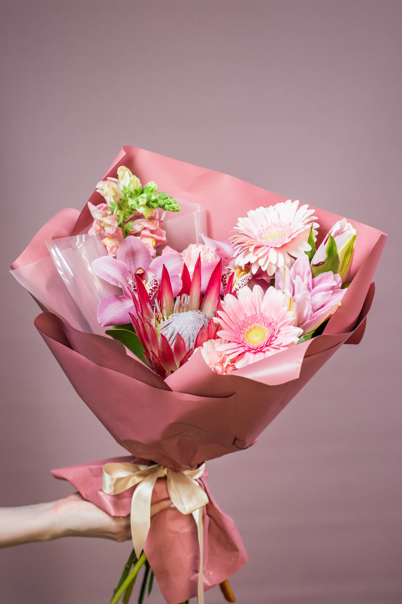
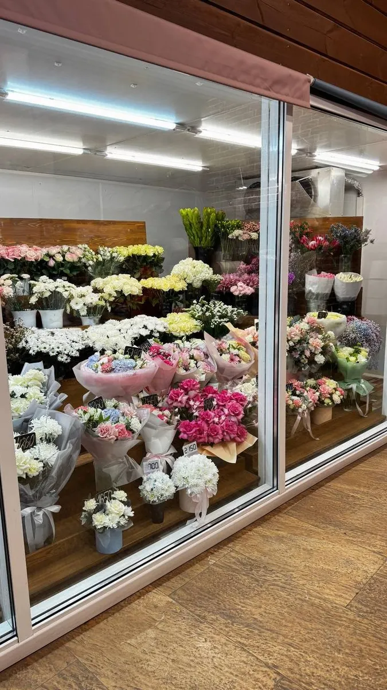
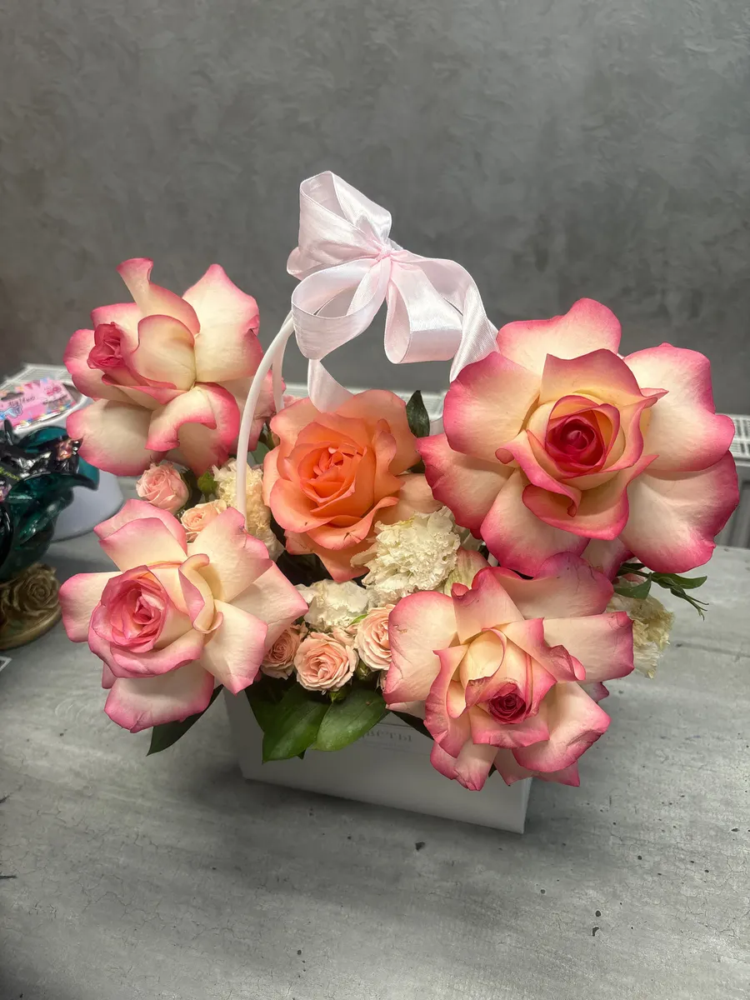
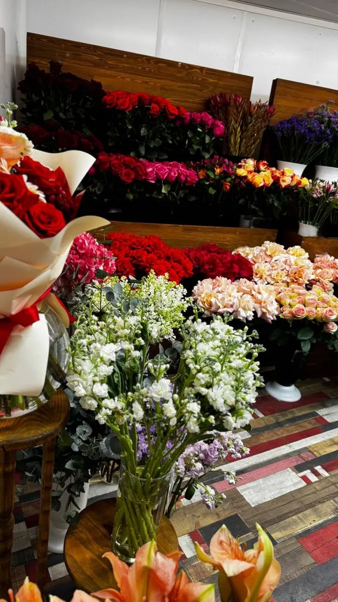

Цветы и букеты · Ижевск
ProЦветы: цветы и букеты в Ижевске
Выберите букет или композицию и дату - заказ в одном сообщении. Состав, оформление и цену назовём при подтверждении.
- Заказ одним сообщением
- Ждём: ежедневно, круглосуточно
- 5,0 и 89 отзывов на Яндекс.Картах

Что можно заказать
Цену называем при подтверждении заказа: она зависит от цветов, размера и оформления.
Позиции
- Авторская флористикана логотипе: авторская флористикауточнить
- Букеты и композициив отзывах: стильная композиция, аккуратная упаковкауточнить
- Доставка из другого городав отзыве: заказали из другого города, быстро доставилиуточнить
- Срочные поздравленияв отзыве: срочно собрали композициюуточнить
Как заказать
Пишете нам
Расскажите, какой повод, на какую дату и какие цветы любит тот, кому дарите, или выберите в форме ниже.
Согласуем детали
Состав, оформление и цену называем при подтверждении заказа.
Получаете букет
Адрес: Ижевск, улица Максима Горького, 150. Доставку уточняйте при заказе.



Что пишут гости
Заказ из другого города
В отзыве: заказали доставку из другого города, довольны и заказчик, и получатель.
Быстро подскажут и доставят
В отзыве: быстро всё подсказали и быстро доставили.
Аккуратная упаковка
В отзыве: цветы свежие, композиция стильная, упаковка аккуратная.
Отзывы с Яндекс.Карт
«Так случилось,что срочно нужно было поздравить тётю мужа в г.Ижевс. Не знакомые места .Обратились в данный салон .Обслуживание на высоте ,персонал вежлив и терпелив.Сама флорист ,понимаю о чём говорю.Выбор цветка шикарный.Девочки собрали красивую композицию.Именинница осталась довольна .Рекомендую 👌данный салон ♥️»
Вера Езерская · 18 февраля
«Хочу выразить благодарность этому замечательному магазину и флористам лично, по рекомендации друзей заказала доставку из другого города и осталась очень довольна и я и получатель! Рекомендую однозначно, очень быстро все подсказали, и быстро доставили! Процветания Вам!»
Арина Хачатрян · 18 февраля
«🌸 Спасибо цветочному магазину за невероятную красоту! 💐 Букет просто волшебный: цветы свежие, композиция стильная, упаковка аккуратная — всё на высшем уровне! ✨ Обязательно приду ещё — и друзьям порекомендую! 💖😊»
Юлия · 27 августа
Отзывы с карточки на Яндекс.Картах.
Частые вопросы
Как заказать?
Выберите позицию и дату в форме на странице или напишите в мессенджер. Подтвердим детали и стоимость.
Где вы находитесь?
Ижевск, улица Максима Горького, 150. ежедневно, круглосуточно.
Сколько это стоит?
Цену называем при подтверждении заказа: она зависит от цветов, размера и оформления.
Напишите, какой букет и на какую дату нужен
- Адрес
- улица Максима Горького, 150, Ижевск
- Часы
- ежедневно, круглосуточно
- Телефон
- +7 (919) 901-65-55